VLA와 WAM은 같은 입력을 두고 경쟁하는 단순 대안이 아니다.
행동만 출력하는 정책과 미래 관측·행동을 함께 생성하는 모델은 예측 범위와 학습 목표가 다르다.
Robot Learning · VLA · World Action Model
로봇이 다음 행동만 고르는 대신, 그 행동이 만들어 낼 미래 장면까지 예측한다면 무엇이 달라질까? NVIDIA Cosmos Labs 발표 화면을 바탕으로 VLA와 WAM의 구조적 차이, Cosmos 3의 방향, 그리고 실제 배치가 요구하는 평가·지연시간·안전성의 조건을 읽는다.
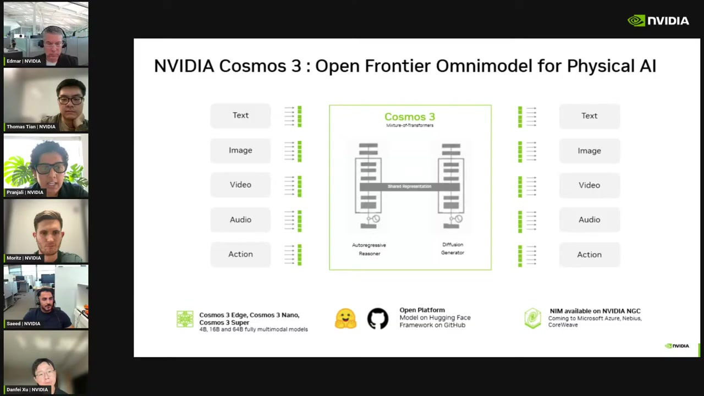
영상 임베드는 사용하지 않았습니다. 원본 발표는 NVIDIA Developer의 YouTube 페이지에서 확인할 수 있습니다.
원본 영상 보기 ↗VLA는 시각·언어·로봇 상태를 행동으로 직접 연결하는 정책에 가깝다. WAM은 여기에 미래 관측의 생성을 더해 세계 예측과 행동 생성을 공동 문제로 만든다. 발표 화면에 나타난 NVIDIA Cosmos 3는 이 구분을 한 단계 확장해 행동을 독립적인 입출력 모달리티로 다루고, 추론 모델과 확산 생성기, 공개 모델, RoboLab 평가, Jetson 엣지 배치, 정책 서버까지 하나의 Physical AI 개발 흐름으로 묶는다. 그러나 embodiment 일반화, 행동–상태 드리프트, 물리 오류, 지연시간과 런타임 정지는 모델 점수만으로 해결되지 않는 별도의 시스템 문제로 남는다.
Key findings
행동만 출력하는 정책과 미래 관측·행동을 함께 생성하는 모델은 예측 범위와 학습 목표가 다르다.
VLM 기반 System 2와 diffusion 기반 System 1의 분리는 고수준 판단과 연속 제어를 다른 계층으로 다룬다.
텍스트·영상·오디오와 행동을 공유 표현에 연결해 세계 이해와 제어를 하나의 생성 체계로 묶는다.
RoboLab 평가, sim–real 검증, 정책 서버, 로봇 클라이언트, 엣지 지연시간과 상태 감시가 함께 필요하다.
로봇 몸체 변화, 메모리, 물리 오류, 행동–상태 드리프트와 정지 상태는 별도 운영 지표를 요구한다.
01 · Two paradigms
VLA와 WAM의 가장 유용한 구분은 모델 이름이 아니라 무엇을 출력하도록 학습했는가에서 시작한다.
VLA는 카메라 관측, 언어 지시, 로봇 상태를 받아 행동을 생성한다. 화면의 GR00T N1 구조에서는 이미지와 언어가 Vision-Language Model 기반의 고수준 추론 계층으로 들어가고, 로봇 상태와 행동 토큰은 Diffusion Transformer의 디노이징을 거쳐 모터 행동이 된다. 이 구조는 느리고 의미적인 판단과 빠르고 연속적인 제어를 각각 System 2와 System 1로 나눈다.
시각·언어·상태를 해석해 로봇이 실행할 행동을 직접 생성한다.
행동과 그 결과로 나타날 미래 프레임을 함께 생성한다.
WAM의 차별점은 행동을 더 잘 디코딩한다는 데만 있지 않다. 모델은 특정 행동이 수행된 뒤 카메라에 나타날 미래 관측을 행동과 함께 생성한다. 결과적으로 정책 학습은 “무엇을 할 것인가”뿐 아니라 “그 행동 뒤 세계가 어떻게 변할 것인가”라는 예측 문제와 결합된다.
VLA가 행동을 위한 지각 모델이라면, WAM은 행동을 포함한 미래 세계의 생성 모델에 가깝다.
그렇다고 WAM이 언제나 VLA의 상위 호환이라는 결론은 성립하지 않는다. 미래 프레임 생성은 더 풍부한 학습 신호를 제공할 수 있지만 연산량과 지연시간, 데이터 구성의 부담도 키운다. 실시간 조작에서는 미래 영상 자체가 필요하지 않을 수 있고, 하드웨어 제약이 강한 로봇에서는 간결한 행동 정책이 더 현실적인 선택일 수 있다.
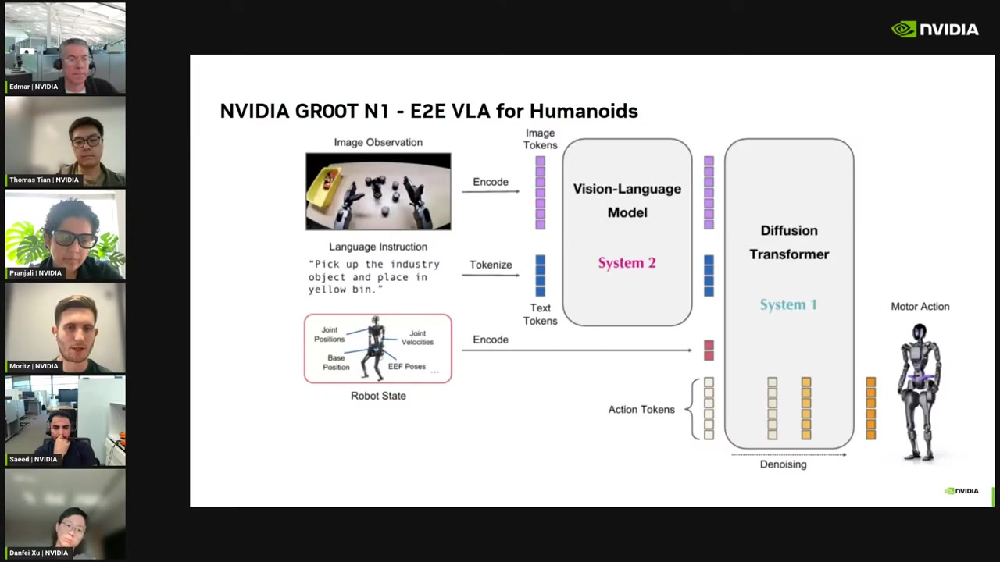
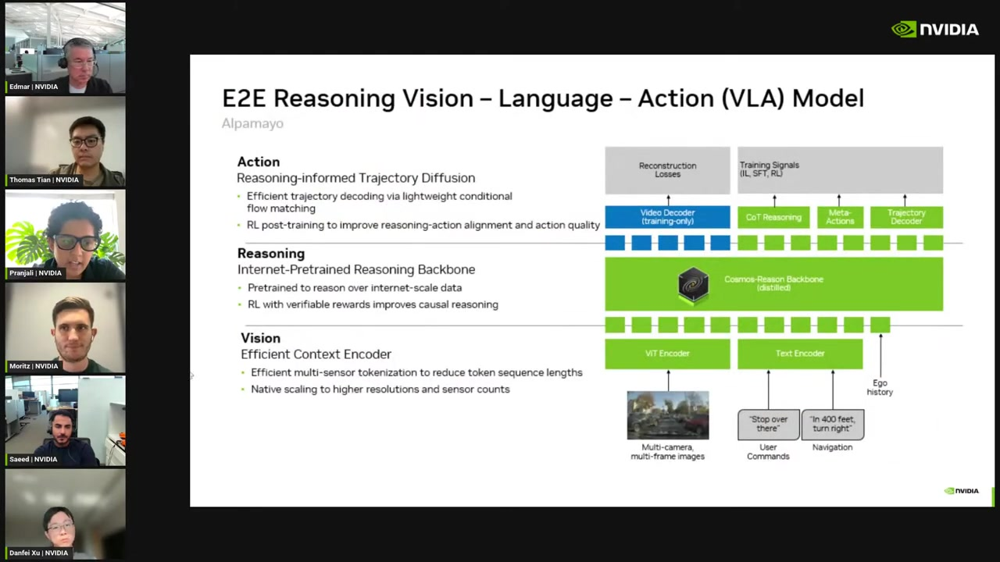
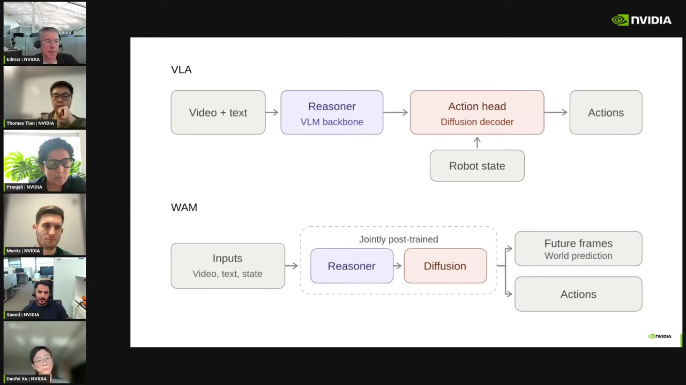
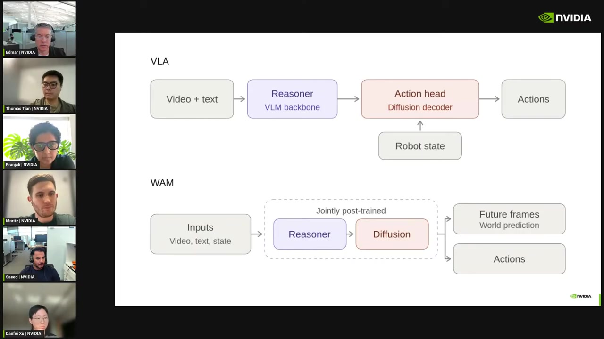
답변은 자막 부재로 재구성하지 않았다. 다만 질문 자체는 현장의 판단 기준을 선명하게 보여준다.
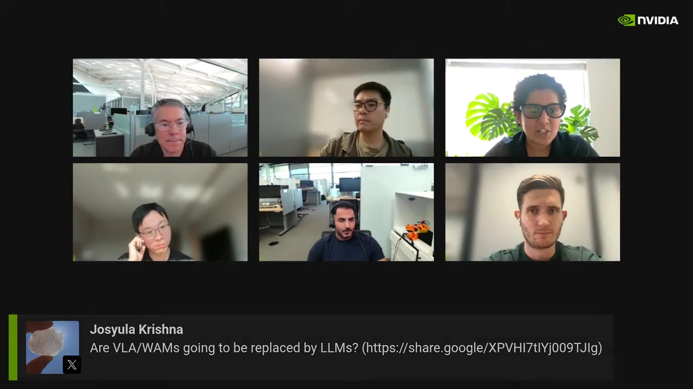
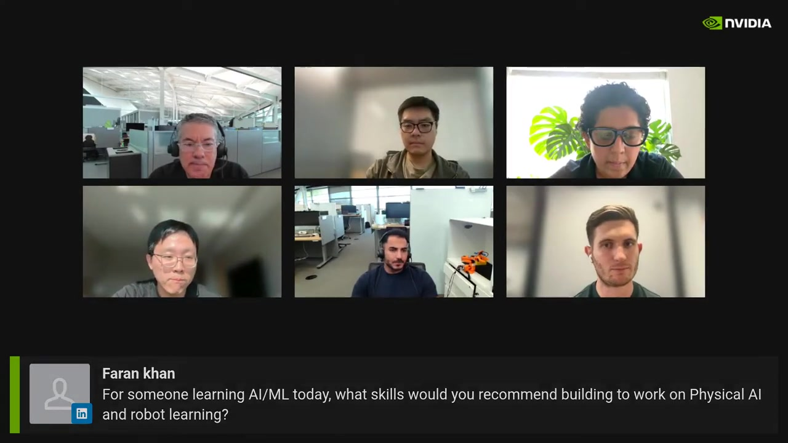
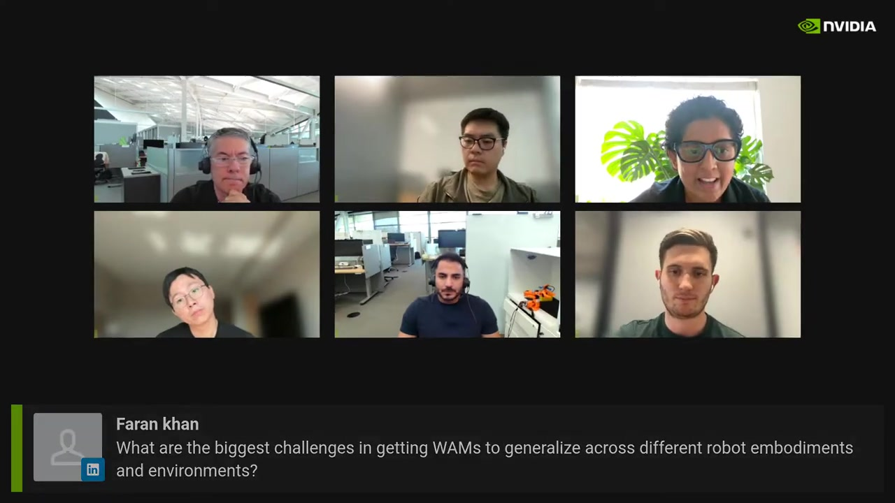
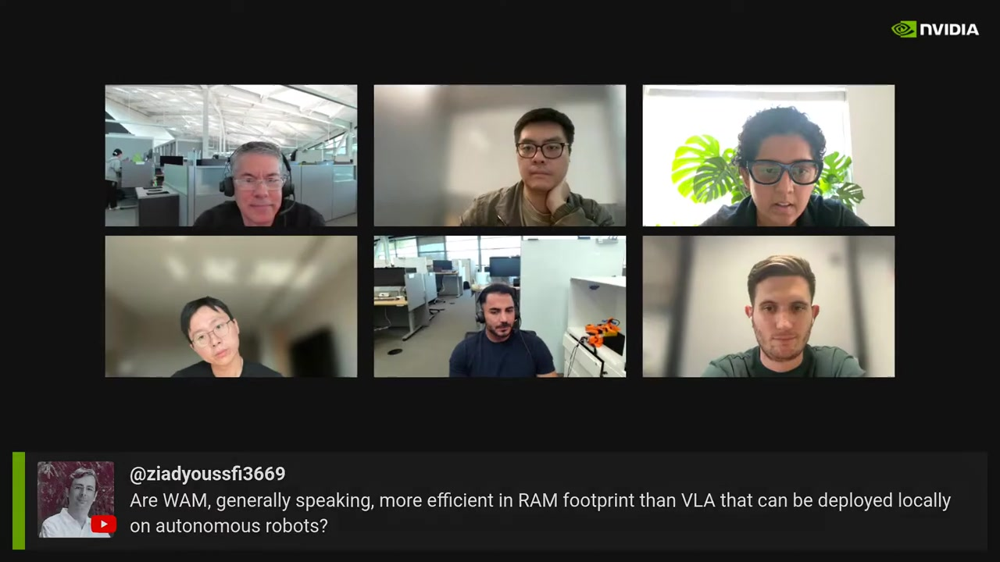
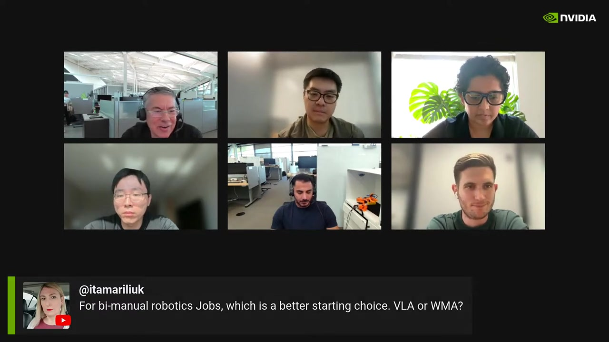
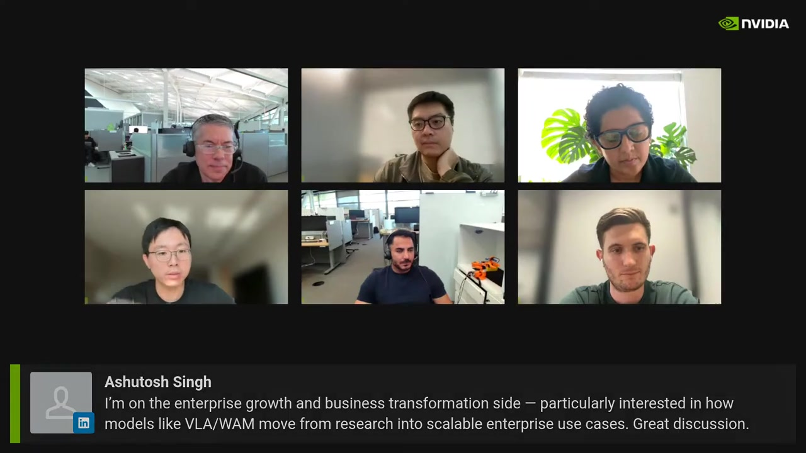
02 · Omnimodal foundation
발표 화면에서 Cosmos 3의 가장 중요한 선언은 모델 크기가 아니라 모달리티의 재배치다.
Cosmos3-Edge-Policy-DROID 모델 카드는 텍스트, 이미지, 비디오, 행동 궤적을 입력으로 받는 Physical AI용 모델 계열을 보여준다. 중앙의 공유 표현은 Autoregressive Reasoner와 Diffusion Generator를 연결하며 텍스트·이미지·비디오· 오디오·행동을 입출력 모달리티로 대칭 배치한다. 행동은 시각 모델 뒤에 붙는 전용 헤드의 결과만이 아니라, 다른 모달리티와 변환 가능한 생성 대상이 된다.
화면상 구조는 순차적 토큰 예측에 적합한 autoregressive reasoner와 연속적이고 고차원적인 신호 생성에 적합한 diffusion generator를 함께 둔다. 이 조합은 언어적 추론과 영상·행동 생성을 하나의 공유 공간에서 연결하려는 설계로 읽을 수 있다. 모델 카드에는 Transformer, Mixture-of-Transformers(MoT), Cosmos Framework가 핵심 구성으로 표시된다.
| 모달리티 | 화면상 제한 | 연구·배치 관점의 의미 |
|---|---|---|
| 텍스트 | 최대 4,096 토큰 | 긴 작업 지시와 문맥을 받을 수 있으나 실제 제어 주기와는 별도 설계가 필요하다. |
| 이미지·비디오 | 256p / 480p | 고해상도 인식보다 멀티모달 추론과 처리 효율에 무게를 둔 입력 범위다. |
| 비디오 | 최대 5프레임 | 긴 시간 기억을 입력 프레임만으로 해결하지 않음을 시사한다. |
| 행동 구간 | 16–400 비디오 프레임 | 행동 궤적을 시간축 생성 대상으로 취급한다. |
| 로봇 표현 | DROID 8차원 | 범용 모델이라는 표현과 별개로 실제 행동 인터페이스는 특정 embodiment에 묶여 있다. |
바로 이 마지막 제한이 중요하다. 멀티모달 공유 표현이 광범위하더라도, 실제 로봇에 연결되는 행동 벡터는 플랫폼의 관절·그리퍼·카메라 자세 정의에 의존한다. 세계에 대한 표현의 일반성과 로봇 몸체에 대한 제어 인터페이스의 일반성은 같은 문제가 아니다.
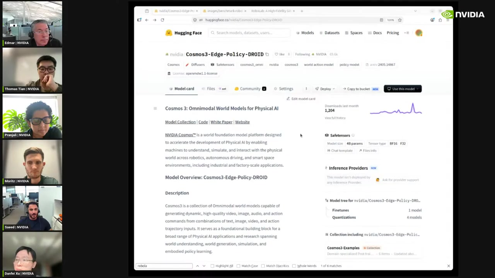
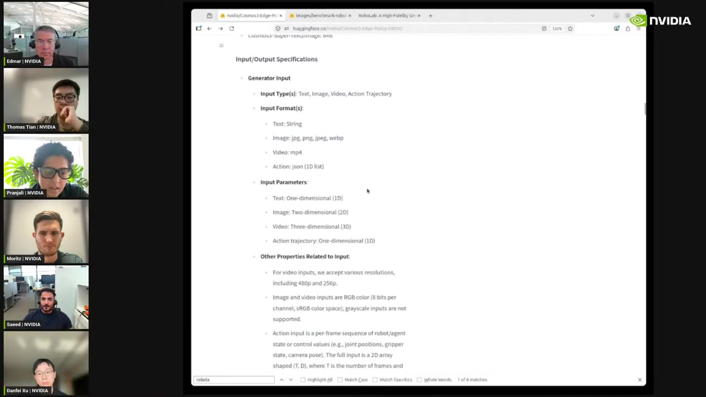
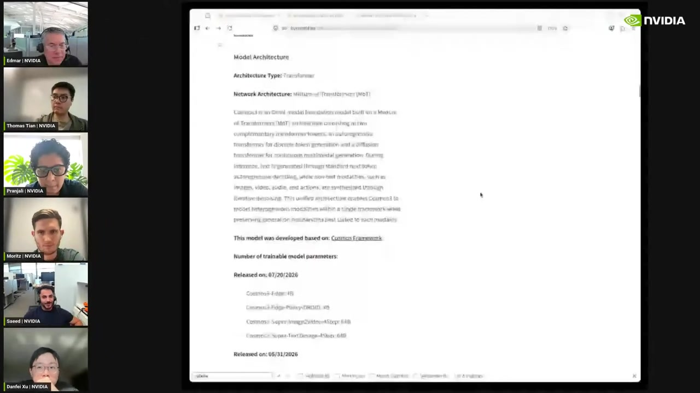
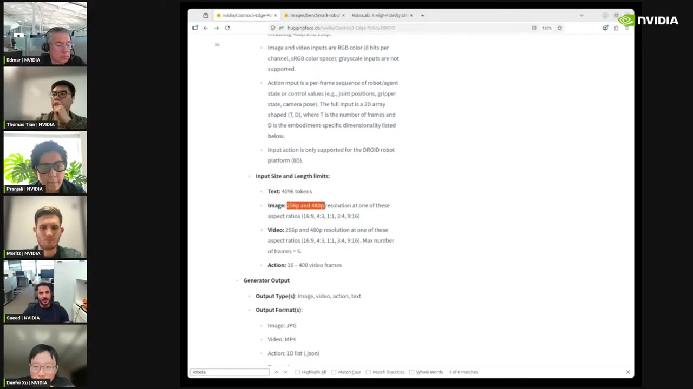
03 · Evaluation
Cosmos 3의 평가 화면은 정책 순위뿐 아니라 난이도, 지시의 구체성, 능력 축과 sim–real 관계를 분리해 보여준다.
정책별 벤치마크는 전체 성공률과 함께 단순·중간·복잡 작업, vague·default·specific 지시 조건을 나눈다. 이어지는 화면은 Relational, Visual, Procedural 역량을 별도로 표시한다. 이는 낮은 점수가 관계 추론의 실패인지, 물체를 잘못 본 것인지, 절차를 끝까지 수행하지 못한 것인지 구분하려는 평가 설계다.
RoboLab 벤치마크 순위와 실제 로봇 실험 사이의 산점도에는 Spearman 상관계수 0.94가 표시된다. 화면 자료가 주장하는 범위에서 이는 시뮬레이션 평가의 정책 순위가 실물 로봇의 순위와 강하게 연결될 가능성을 보여준다. 다만 상관계수 하나만으로 개별 작업의 성공률, 새로운 환경에서의 강건성, 안전한 실패를 보장할 수는 없다.
좋은 시뮬레이터는 실물을 없애는 도구가 아니라, 실물 검증의 우선순위를 정하는 도구다.
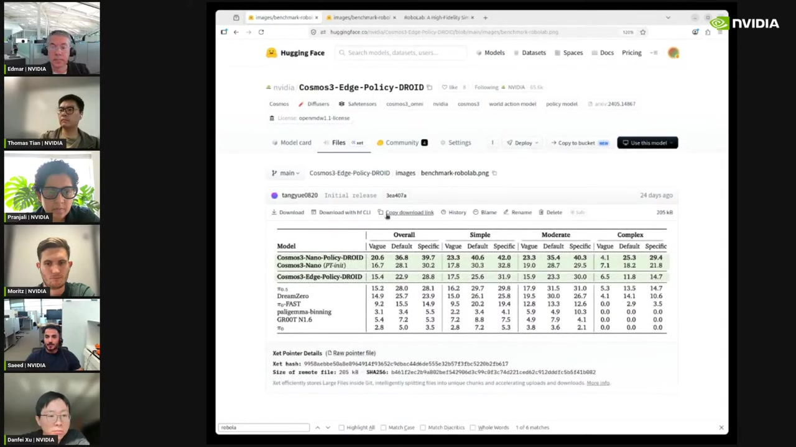
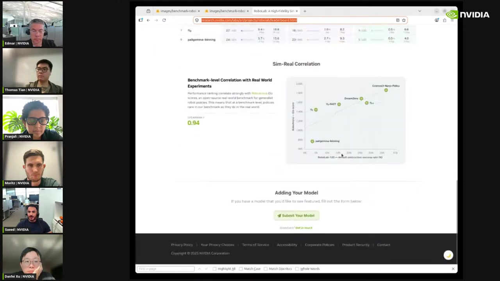
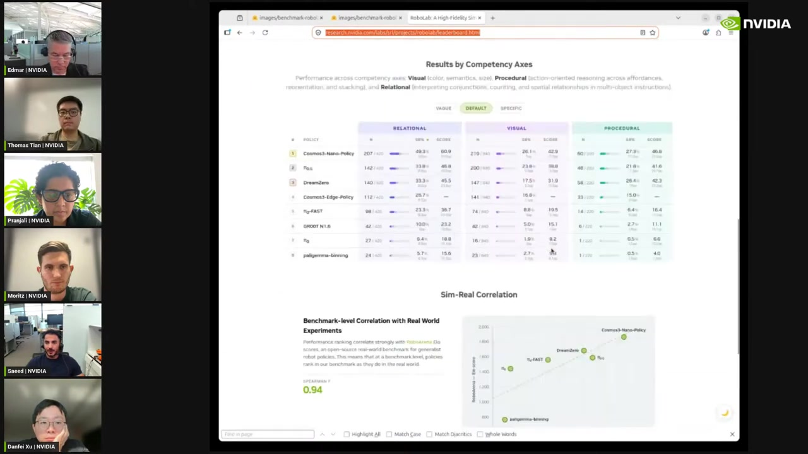
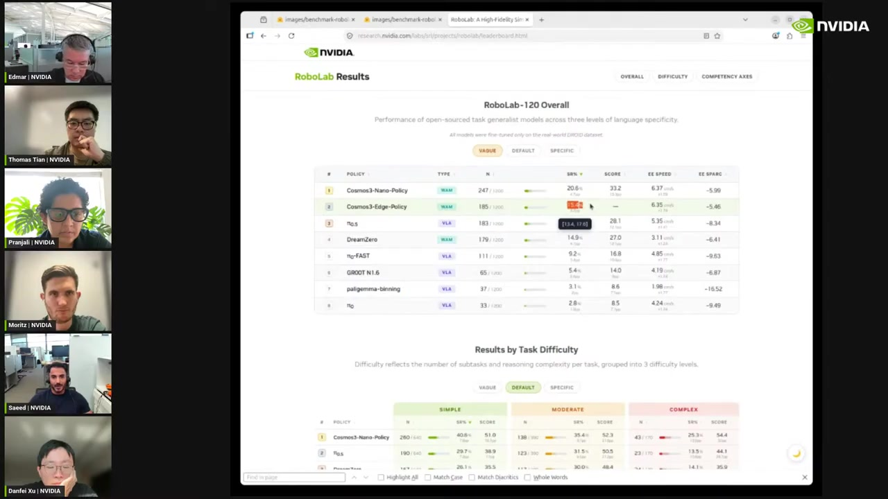
04 · From checkpoint to robot
모델 공개는 완성품의 배포가 아니라 평가와 운영을 시작할 수 있는 인터페이스의 공개에 가깝다.
Quickstart 화면은 Cosmos3-Edge-Policy-DROID를 정책 서버로 실행하고, 시뮬레이션 또는 실제 로봇의 RoboLab 클라이언트가 행동을 스트리밍받는 구성을 보여준다. 서버와 로봇을 분리하면 모델 서빙과 로봇 제어를 독립적으로 교체할 수 있지만 네트워크 지연, 연결 상태와 타임아웃이 새로운 실패 지점으로 들어온다.
Jetson AGX Thor 표는 5Hz 기준 T5000·T4000·T3000 구성을 실시간으로 표시하지만, T2000 16GB 구성은 실시간 기준을 충족하지 못하는 것으로 제시한다. 화면의 E2E 지연은 각각 약 2.59초, 3.24초, 4.05초, 7.63초다. 이 수치는 처리량의 단일 평균이 아니라 행동 묶음과 제어 주기를 포함한 해당 평가 구성의 표시값으로 읽어야 한다.
| 구성 | E2E 지연 | 5Hz 실시간 표시 |
|---|---|---|
| T5000 | 약 2.59초 | Yes |
| T4000 | 약 3.24초 | Yes |
| T3000 | 약 4.05초 | Yes |
| T2000 16GB | 약 7.63초 | No |
화면의 실행 예시는 포트 8000의 정책 서버와 별도의 RoboLab 클라이언트를 두고,
BananaInBowlTask를 여러 headless 환경에서 병렬 실행한다. 모델,
서버, 시뮬레이터, 로봇 제어기를 분리하면 각 단계의 재현성과 장애 위치를 확인하기
쉬워진다. 반면 실물 로봇에서는 카메라 동기화와 행동 전송, 비상 정지까지 동일한
관측 체계 안에 포함해야 한다.
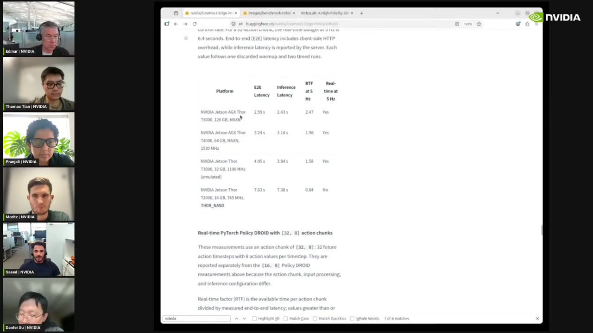
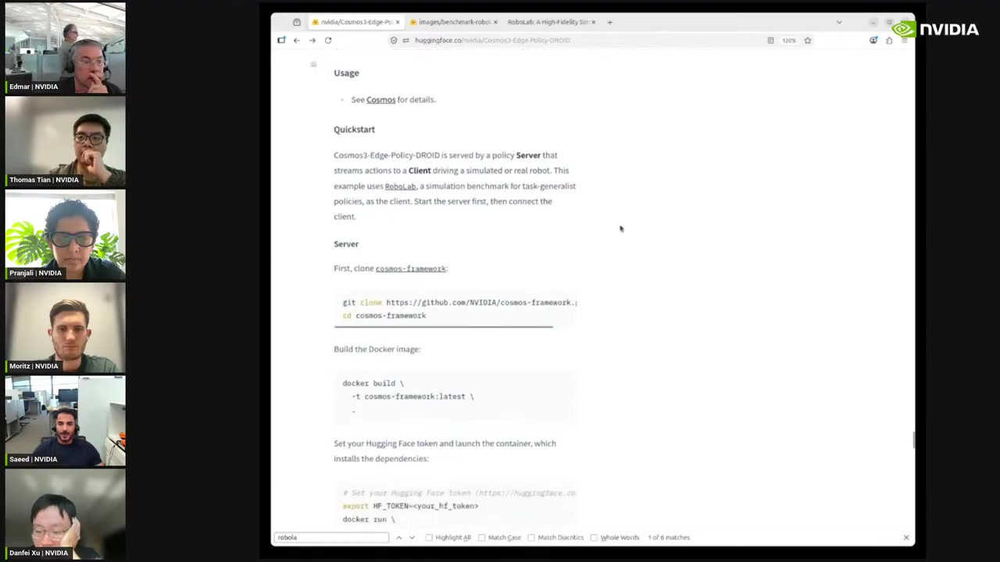
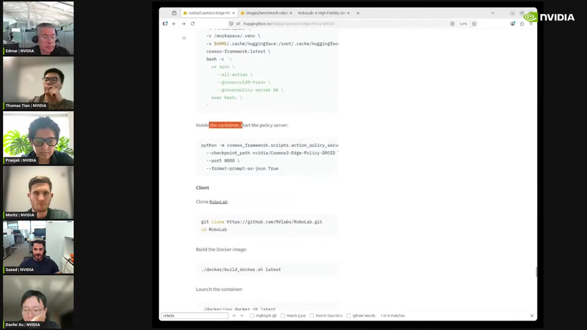
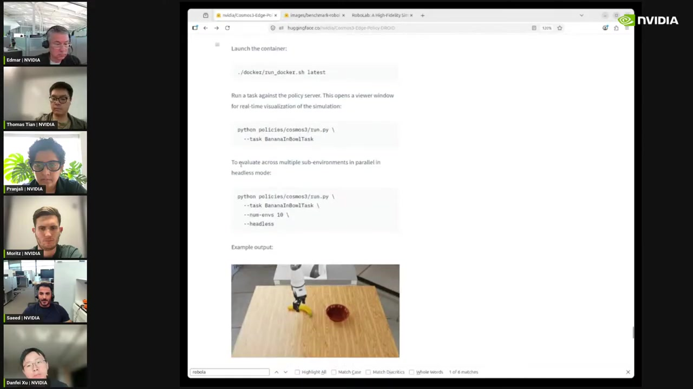
05 · Safety & failure
생성 품질의 한계와 운영 실패는 서로 다른 계층의 문제이며, 둘 다 실제 로봇에서는 안전 문제로 수렴한다.
모델 카드 화면에는 시간적 불일치, 불안정한 카메라·물체 움직임, 부정확한 물리 상호작용, 오디오·비디오 비동기, 행동–상태 드리프트가 열거된다. 객체 상태, 인과관계, 공간 기하, 시간 순서, 행위자의 의도와 미래 결과에 대한 추론 오류도 가능하다고 명시한다.
카메라 관측과 생성된 미래가 시간적으로 어긋나면 정책은 이미 지나간 세계에 반응할 수 있다.
시각적으로 그럴듯한 미래가 실제 접촉, 마찰, 충돌의 결과와 일치한다는 보장은 없다.
모델이 가정한 로봇 상태와 실제 관절·그리퍼 상태가 벌어지면 오차가 연속 행동에 누적된다.
정책 서버와 로봇 클라이언트의 분리는 지연, 연결 단절, 정지 상태를 감시할 운영 계층을 요구한다.
실제 데모 화면은 이 점을 구체화한다. 세 카메라 뷰 위에 EDGE-I4 STALLED가 표시된 뒤 상태가 LIVE로 바뀌고 바나나 이동이 이어진다. 화면만으로 정지의 원인이나 복구 절차는 확인할 수 없지만, 최소한 실제 시스템에는 성공률과 별개로 서비스 상태를 관측해야 할 필요가 있음을 보여준다.
로봇 안전은 더 좋은 행동을 생성하는 문제이면서, 잘못된 행동을 실행 전에 멈추는 시스템 문제다.
화면의 시청자 의견도 예상 밖 행동을 지속적으로 감지하고 방지해야 한다는 점을 강조한다. 실제 배치에서는 모델 신뢰도, 센서 이상, 행동 한계, 네트워크 상태와 비상 정지를 독립적인 보호 계층으로 두어야 한다. 생성 모델의 자기평가만으로 안전 경계를 대체해서는 안 된다.
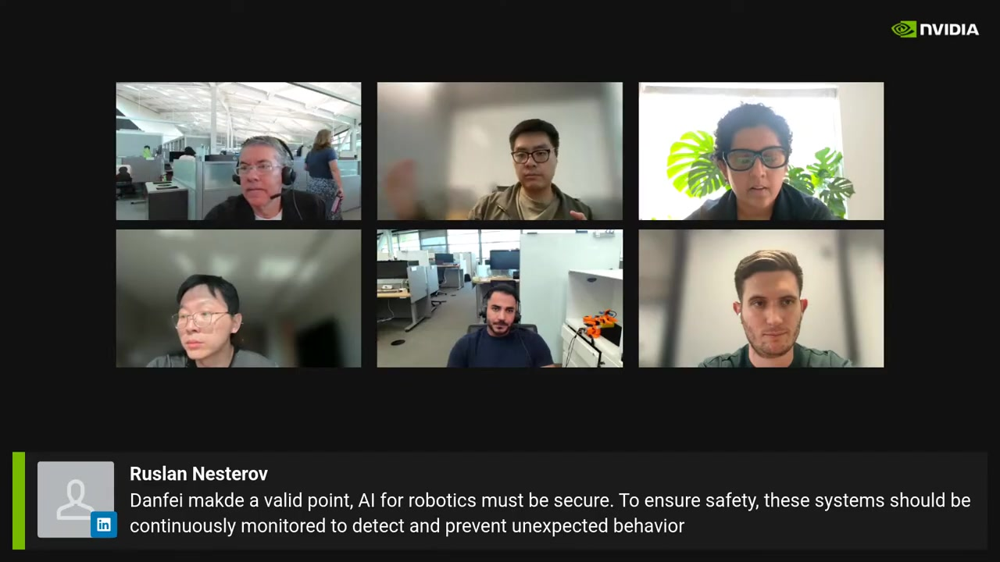
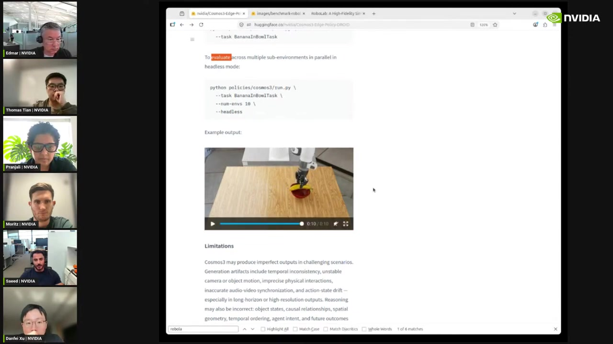
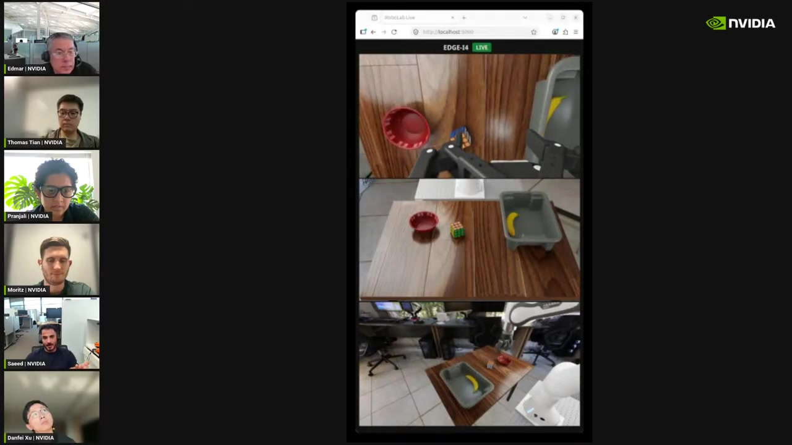
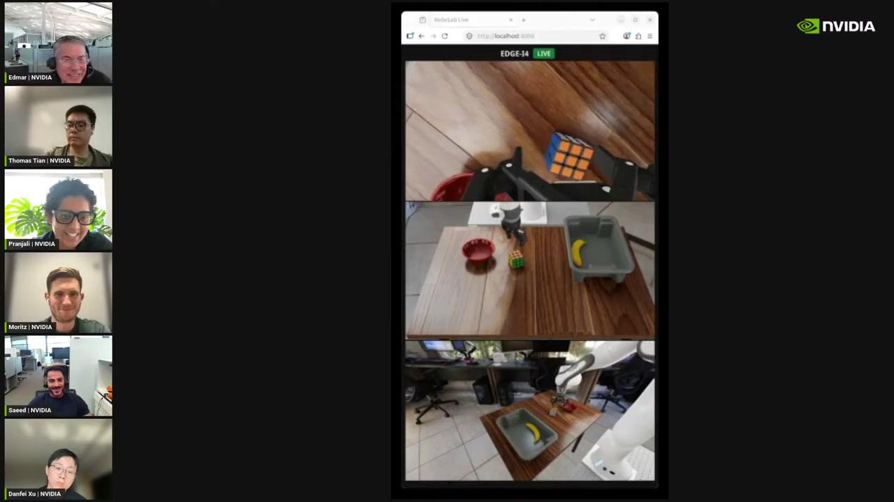
06 · Implications
발표 화면에서 가장 설득력 있는 메시지는 단일 모델의 우월성이 아니라 모델·평가·하드웨어·운영의 연결이다.
실시간 행동 정책과 미래 예측 모델을 하나의 거대 모델로만 해결하기보다, 작업과 하드웨어에 따라 계층화하는 편이 현실적일 수 있다.
공유 표현과 로봇별 행동 벡터를 분리하면 새로운 몸체로 이전할 때 재학습·보정해야 할 범위를 명확히 할 수 있다.
성공률뿐 아니라 관계 추론, 시각 인식, 절차 수행, 지연, 정지와 복구 시간을 별도 지표로 추적해야 한다.
행동 한계, 센서 검증, 통신 감시와 비상 정지는 생성 정책과 독립적으로 동작하는 보호 계층이어야 한다.
이 글은 영상 속 자료를 화면 근거로 기록한 분석이며, 원 논문·코드·실험 환경을 독립적으로 재현한 결과가 아니다. Spearman 0.94와 Jetson 지연시간을 포함한 수치는 화면에 표시된 값을 옮긴 것이다. 표본 구성, 측정 방식과 통계적 불확실성은 이 자료만으로 검증할 수 없다.
또한 해상도, 프레임 수, DROID 행동 차원과 같은 제한은 영상 시점에 표시된 Cosmos 3 변형의 사양이다. 다른 변형이나 후속 버전에 그대로 적용된다고 가정해서는 안 된다. 특히 구두 발표와 질의응답은 자막이 없어 분석 대상에서 제외했다.
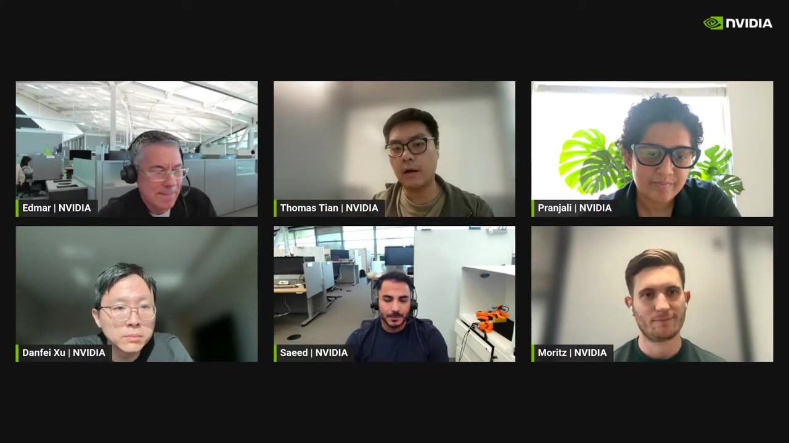
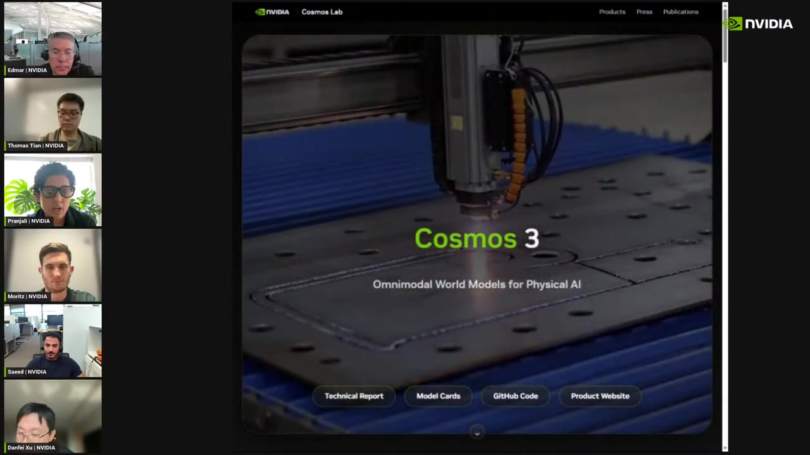
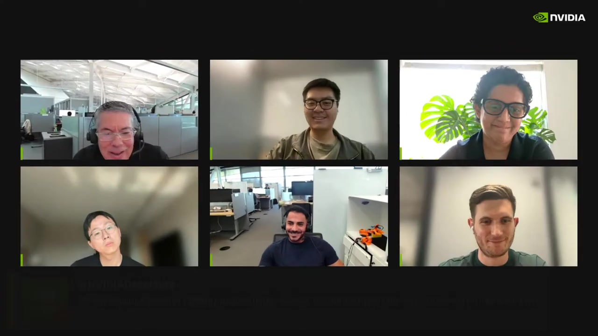
Closing thought
LagVL0KyGgo,
원본 링크.